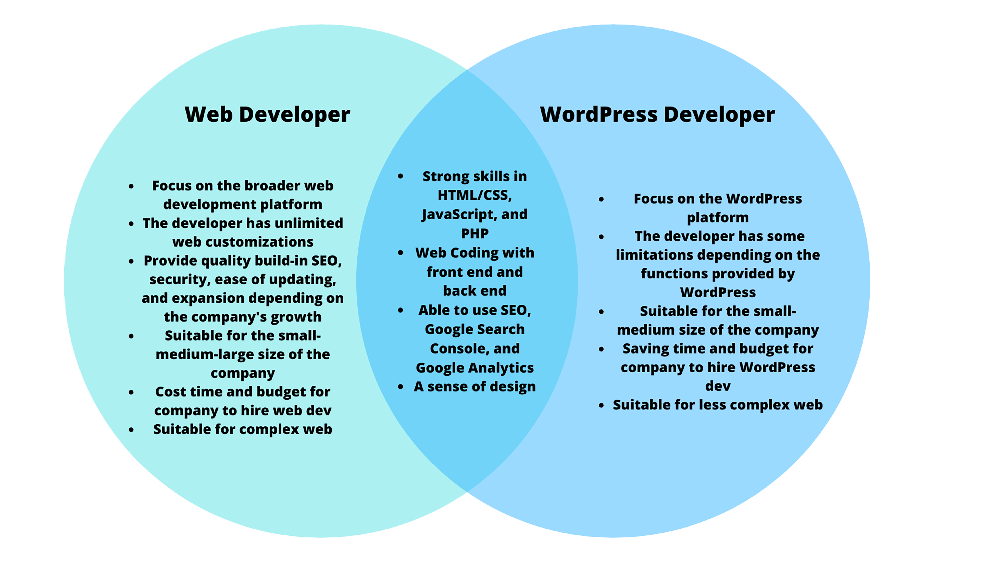
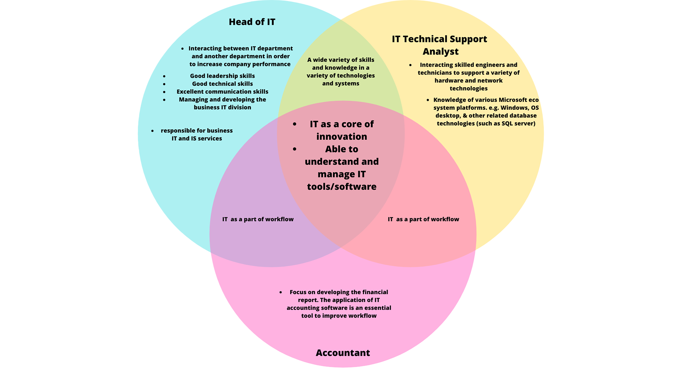

back to Cinema
Personal Information

My name is Louise (s3909884). I am 20 years old, and I was born and spent a lot of my childhood in Cambodia. I have a mixed heritage as my father is English. I spent the last ten years or so in Canberra and moved to Melbourne in March to change scenery. I started uni this year in hopes of doing an exchange and learning something new. In my spare time, I like to design clothes and music. I gravitated toward IT about three years ago when I was in college. I found coding very fun and used it for a few years. On top of that, many of my interests include using different software, which motivated me to become more tech-savvy.

My name is Riley McKay (s3839145). I'm a 20-year-old second-year student studying Bachelor of Accountancy (Professional). I'm an Australian with a half Maltese background. My favorite thing to do in my free time is being with friends, whether playing games or watching AFL/NBA, or going out to eat. My first time studying IT was in high school, where I chose to do IT as an elective in year 9/10 and then further studied it throughout the rest of my high school years. However, my first interest when it came to computers was my brother when I was around 9 years old where he got me hooked on video games. With this new interest in computers, I took a very early interest in IT and computers, and now my interest in computers sparked from a young age. I am very interested and eager in IT studies, now my favorite part of IT includes Cybersecurity and database systems which also links into my accounting major.

My name is Biar Deng (s3895962). I am a 19-year-old studying for a Bachelor of IT. I am a South Sudanese national who was born overseas. I speak Dinka, which is the second most widely spoken language in Sudan. Last year, I graduated from Simonds Catholic College (high school), my first year of university. One unique aspect of my personality is that I enjoy reading, whether for financial literacy or just for pleasure. In addition, soccer piques my attention. What interests me about IT is the broad impact it has. The fact that leading technology companies today can/have an enormous scale impact on millions through their products and services is impressive to me. Results such as communicating to individuals across the globe through text or call on services like Instagram are very personal to me as it's where I do most of my marketing and socializing. Moreover, I have been interested in being a part of that impact since I got my first phone at 13. Therefore, the large-scale effect that technology has interested me the most.
My name is Dang Le (s3770149). I am a third-year student of Bachelor of Business (Marketing). I am 100% Vietnamese. My hobby is visiting art museums and exhibitions during recreation time. Spending time in the museum is a way to practice meditation. Also, understanding different art cultures help me have more creative ideas to improve my marketing work. I found interest in IT due to working as Facebook ads and website content management at the local restaurant. I found that understanding IT is essential to helping the business prevent scamming due to a lack of IT knowledge.
Team Profile
| Name | Description |
|---|---|
| Biar Deng |
Myers-Briggs TestPersonality type: Protagonist (ENFJ-A)
What's your learning style85% visual learner, 79% kinesthetics, 69% Auditory Test my creativityCreativity score- 66% |
| Claira Burn |
Myers-Briggs TestPersonality type - entertainer (ESFP-A)
What's your learning styleScores: auditory 30%, visual 40%, tactile 30% Big Five Factor Markersextroversion 70, emotional stability 57, agreeableness 76, conscientiousness 18, intellect/imagination 52 |
| Riley McKay |
Myers-Briggs TestPersonality type: Consul (ESFJ-T)
What's your learning styleAuditory 20%, Visual 25%, Tactile 55% Test my creativityCreativity score - 52.58% |
| Louise Hill |
Myers-Briggs TestPersonality type; Commander - ENTJ
What's your learning styleScores: Auditory: 20%, Visual: 50% Tactile: 30% Perfect Personality TestResult: ENFJ - the giver |
| Dang Le |
Myers-Briggs TestPersonality type: Advocate (INFJ-A)
What's your learning styleScores: Auditory: 20%, Visual: 55% Tactile: 25% Big five factor markersCreativity score – 71% |
Ideal Jobs
Based on the relevant position activities, five positions were identified and categorized into two groups for comparison and contrast. This category includes Web Developers and WordPress Developers, which make up the first group. The second group is IT Technical Support Analyst, Accountant, and Head of IT.
Group 1: Web Developer vs WordPress Developer 
Group 2: Head of IT vs IT Technical Support Analyst vs Accountant
After evaluating five different jobs, the finding showed that each career offers different skill requirements, levels of entrance, and duties. Web Developer and WordPress Developer are the most common jobs that take responsibility for front-end and back-end development. WordPress developers only focus on building the website base on the WordPress platform. However, web developers need more development skills than WordPress developers because they have worked in various web platforms besides WordPress. Both Head of IT and IT Technical Support Analyst have a wide variety of skills and knowledge in various technologies and systems. Although, the Head of IT has the highest level of entrance than IT Technical Support Analyst, where the positions have crucial roles in managing and maintaining the performance of the whole IT department. On the other hand, Accountants are mainly irrelevant to the IT descriptions and skills requirement. Hence, applying IT such as Xero helps Accountants increase performance and time-saving in financial reporting and analysis.
My name is Claira Burn (s3850865). I was born and raised in Sydney but decided to move to Melbourne for university to get a change of scenery. I am Australian but I am a mix of a Thai mother and Austrian father, despite this the only language I can speak is English. I graduated high school in 2019 and decided to take a gap year to travel, however that did not go to plan and the only trips I made was from my room to the kitchen. I am a fan of F1 because it is on late at night and I am a night owl. My favourite driver is Daniel Ricciardo because you have to support the Aussies. I have done volunteering for Girls Programming Network teaching young girls how to code.